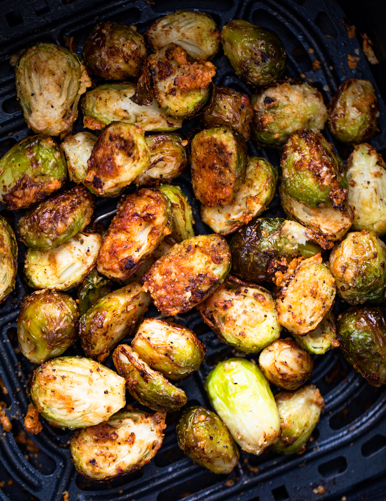

Air Fryer Brussels Sprouts

Description
Soft and tender on the inside and crispy on the outside Brussels sprouts are full of flavor. A perfect healthy side dish for dinner.
Ingredients
- 1 pound brussels sprouts
- 1 tablespoon olive oil
- 2 tablespoons parmesan cheese, grated, (optional)
- salt and pepper, to taste
- 1 tablespoon Spice blend
Steps
- Blanch brussels sprouts in 3-4 cups of boiling water for 4-5 minutes. Drain well and cool. If Brussels sprouts are large cut in halves.
- Transfer to a medium bowl, add olive oil, parmesan cheese, salt, pepper, and spices of choice, gently toss to combine.
- Heat an air fryer to 375ºF. Transfer to the preheat air fryer and air fry for 12 minutes, shaking halfway through. The brussels sprouts should be crispy and golden on the outside and tender on the inside.